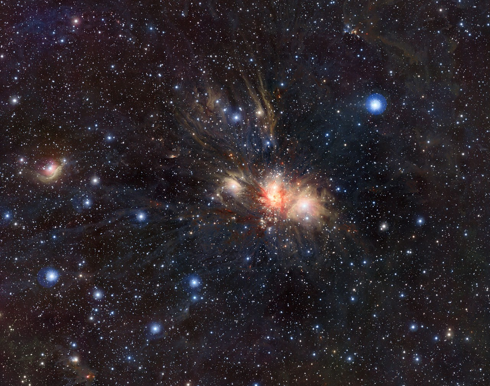

Astronomy Picture of the Day · 15 October 2010
Seeing Through
the Dust
Star birth in Monoceros R2
First, look at the visible-light image of this region of space. Thick clouds of dust cover most of it. Large areas look dark and empty. Only a few faint blue clouds shine through.
But what is hidden behind the dust?
Now, switch to the infrared image to find out.
In the infrared view, you can see long streamers of dust, pink glowing structures, and a cluster of young stars. They were hidden from view before.
This region is called Monoceros R2. It is a star-forming region about 2,700 light-years from Earth. Its brightest blue cloud is a reflection nebula called NGC 2170 (European Southern Observatory 2010).
Why do the two images look so different? Dust blocks and scatters visible light. Infrared light has longer wavelengths, so it passes through the dust more easily and reveals the hidden stars.
Regions like this are called stellar nurseries. Next, we will explore how stars are born inside these cold, dense molecular clouds.
02
What is in the image?

CLICK THE DOTSLook at the dark regions and dust filaments in Figure 2. Have you ever wondered what they are?
The gas in the Milky Way is made up of about 71% hydrogen, 27% helium and 2% heavier elements. Hydrogen gas can exist in warm, spread-out clouds at around 10,000 K, or in colder, denser clouds at around 100 K.
At the centre of these cold clouds, hydrogen atoms join together to form hydrogen molecules (H₂), creating molecular clouds. Several molecular clouds can combine into a giant molecular cloud, with a mass of a few million times that of the Sun. Stars begin to form inside these dense clouds (UNSW School of Physics n.d.b).
Molecular clouds are very cold, at around 10–30 K, and dust makes up about 1% of their mass (UNSW School of Physics n.d.c).
Monoceros R2, a star-forming region in the constellation Monoceros, lies within a huge dark cloud rich in molecules and dust (European Southern Observatory 2010). This means the dark regions and dust filaments you see in Figure 2 are part of this giant cloud.
Molecular clouds are very massive and dense. They are usually found in the disk of the Milky Way, where they appear as dark patches against the bright spiral arms (UNSW School of Physics n.d.b).
This is because dust grains scatter and absorb most visible light (UNSW School of Physics n.d.c). Stars may lie behind these clouds, but much of their light cannot reach us. This explains the large dark regions in the visible-light image in Figure 1.
NGC 2170 is a reflection nebula, which means it does not produce its own light. Instead, dust in the nebula reflects and scatters light from nearby stars.
Blue light is scattered more easily than red light, so reflection nebulae often appear blue. This is also why the sky looks blue during the day (UNSW School of Physics n.d.b).
NGC 2170 is the brightest reflection nebula in this region. It was discovered by William Herschel in 1784 and can be seen through a small telescope (European Southern Observatory 2010).
In the visible-light image in Figure 1, it is the brightest blue-white cloud just to the right of the centre. In Figure 2, it is the bright cloud to the right of the red central region, marked by one of the clickable dots. Its blue glow is starlight that the dust has scattered towards us.
The whole image covers a region that is about 80 light-years wide. A light-year is the distance light travels in one year, which is about 9.5 trillion kilometres.
To give you an idea of this size, Proxima Centauri, the closest star to the Sun, is about 4.2 light-years away. This means the width of the image is roughly 19 times that distance.
By contrast, the dense core containing the central star cluster is less than 2 light-years across. Despite its small size, it is packed with young, massive stars (European Southern Observatory 2010).
You can explore this scale yourself by moving your mouse over Figure 2. The bottom right corner of the image shows the distance from the central star cluster in light-years, so you can measure how far different parts of the cloud are from the centre.
03
How stars and planets form
A cold, dense cloud
10–30 K ≈ −263 to −243 °CMolecular clouds are extremely cold, with temperatures of only 10–30 K, which is about −263 to −243 °C. This low temperature is important because star formation depends on the balance between gravity and gas pressure.
When the temperature is low, the gas has less thermal pressure to resist gravity. As a result, gravity can more easily pull the gas together (UNSW School of Physics n.d.c).
The dust filaments and dark regions in Figure 2 are parts of this cold, dense cloud, where the conditions are suitable for stars to form.
Gravity takes over
several million yearsWhen gravity becomes stronger than the gas pressure, the cloud begins to collapse. Because the cloud is not evenly spread out, it breaks into many smaller clumps as it collapses.
Each clump can then collapse under its own gravity. Because one cloud breaks into many clumps, most stars form in groups rather than alone (UNSW School of Physics n.d.c).
This process takes time. Star formation usually continues for several million years, inside clouds of gas and dust that are hundreds of light-years across (European Southern Observatory 2010).
As gas gathers in each clump, its centre becomes denser and eventually begins to form a young star. The dense star cluster at the centre of Figure 2 is still forming in this way.
A protostar with a disk and jets
more mass → shorter lifeAs each clump collapses, a protostar forms at its centre. Gas farther from the centre does not fall straight into the protostar. Instead, this gas forms a rotating disk around the protostar.
The protostar also sends out high-speed jets along its rotation axis, while young stars produce strong stellar winds (UNSW School of Physics n.d.c). The pink and red structures in Figure 2 are likely gas ejected by these young stars (European Southern Observatory 2010).
Massive stars have stronger gravity, which creates higher pressure in their cores. They burn through their nuclear fuel faster, so they have shorter lives (UNSW School of Physics n.d.c).
Eventually, massive stars end their lives in supernova explosions. These release material back into the interstellar medium, where it can become part of new clouds and form another generation of stars (UNSW School of Physics n.d.b). The most massive young stars in Figure 2 will eventually follow this path.
Planets, and our own Solar System
~2% heavier elementsPlanets form in the rotating disk around a young star, where dust and gas gradually come together to build planets. This explains why the planets in our Solar System orbit mostly in the same plane, and almost all spin in the same direction.
Our Solar System formed in a similar way when a cloud of gas and dust collapsed under gravity. This idea is known as the nebula theory, first proposed by Immanuel Kant and Pierre-Simon Laplace in the 18th century (UNSW School of Physics n.d.d).
By the time the Solar System formed, about 2% of its original material consisted of elements heavier than helium, produced by earlier generations of stars. These elements made it possible for rocky planets like Earth to form and provided the materials needed for carbon-based life (UNSW School of Physics n.d.a).
This means that many of the elements in our bodies came from stars that died long before the Sun was born.
04
Latest discoveries
The Gaia satellite is a space mission run by the European Space Agency. It measures the positions, distances and movements of stars very accurately, and it has measured the motions of about one billion stars in our galaxy (UNSW School of Physics n.d.a, n.d.b).
Unlike Gaia, VISTA is a ground-based telescope in Chile with a 4.1-metre main mirror, which was used to capture the APOD image (European Southern Observatory 2010).
Jiang and Hillenbrand (2024) started with 1,690 possible young stars that earlier infrared and X-ray studies had found in Monoceros R2. They re-examined these stars using Gaia's third data release and found that 308 of them were very likely to be genuine members of the region.
They also searched a larger area around Monoceros R2 and discovered 651 additional members that had not been identified before. This brought the total to about 959 likely members. These findings show how Gaia can help astronomers identify young stars and better understand the star-forming region shown in the image.
Numbers from Jiang and Hillenbrand (2024).
Stars move across the sky, and this movement is called proper motion. Gaia can measure this movement very accurately (UNSW School of Physics n.d.b).
Stars in the same cluster are at about the same distance from Earth, and they formed at about the same time from the same gas cloud (UNSW School of Physics n.d.c). Because they formed together, they also tend to move in similar directions.
Jiang and Hillenbrand (2024) used this idea to identify stars that belong to Monoceros R2. They compared the stars' positions, distances and movements, keeping those with similar measurements. This helped them remove foreground and background stars that only appeared to be in the same region.
They also used the Hertzsprung-Russell diagram to check the stars' ages and found ages consistent with about one to ten million years.
The interactive selection activity below shows a simplified version of how astronomers identify members of a star cluster.
This research is important because Jiang and Hillenbrand (2024) identified 651 additional stars that earlier infrared and X-ray studies had missed. They note that their list is still incomplete, because some stars are buried deeper in the cloud, where they are too faint or too hidden by dust to be seen in visible light.
This shows that every type of observation has its limits. Infrared light can pass through dust more easily, while visible-light data from Gaia can help identify stars missed by earlier studies. By combining different observations, astronomers can build a more complete picture of the star cluster.
As we saw in the Home section, looking at the same region in different ways reveals different details.
To understand the whole star cluster, we need more than one way of looking at it.
References
- Anthropic 2026, Claude, [Large language model], Retrieved November 11, 2026, from https://claude.ai
- European Southern Observatory 2010, VISTA reveals the secret of the Unicorn, media release, accessed 15 October 2026, <https://www.eso.org/public/news/eso1039/>.
- European Southern Observatory/J. Emerson/VISTA 2010, Vista with NGC 2170, digital image, Astronomy Picture of the Day, NASA, accessed 15 October 2026, <https://apod.nasa.gov/apod/ap101015.html>.
- European Southern Observatory/J. Emerson/VISTA/Digitized Sky Survey 2 2010, Infrared/visible light comparison of views of a stellar nursery in Monoceros, digital image, European Southern Observatory, accessed 15 October 2026, <https://www.eso.org/public/images/eso1039b/>.
- Jiang, SD & Hillenbrand, LA 2024, 'The emerging stellar complex in Mon R2: membership and optical variability classification', The Astronomical Journal, vol. 167, no. 5, p. 221, DOI:10.3847/1538-3881/ad2fb0.
- UNSW School of Physics n.d.a, PHYS1160 Lesson 1 – What is astronomy? An introduction into historical and modern astronomy, lesson notes, PHYS1160 course materials, Moodle, accessed 11 November 2026, <https://moodle.telt.unsw.edu.au/pluginfile.php/15378351/mod_resource/content/8/PHYS1160%20Lesson%201.pdf>.
- UNSW School of Physics n.d.b, PHYS1160 Lesson 5 – What's so special about The Milky Way? A look into our own home galaxy, lesson notes, PHYS1160 course materials, Moodle, accessed 11 November 2026, <https://moodle.telt.unsw.edu.au/pluginfile.php/15378364/mod_resource/content/6/PHYS1160%20Lesson%205.pdf>.
- UNSW School of Physics n.d.c, PHYS1160 Lesson 6 – What are stars? An introduction into stars, including star formation and evolution, lesson notes, PHYS1160 course materials, Moodle, accessed 11 November 2026, <https://moodle.telt.unsw.edu.au/pluginfile.php/15378368/mod_resource/content/10/PHYS1160%20Lesson%206.pdf>.
- UNSW School of Physics n.d.d, PHYS1160 Lesson 8 – What is the Solar System? An introduction to the Solar System and the planets, lesson notes, PHYS1160 course materials, Moodle, accessed 11 November 2026, <https://moodle.telt.unsw.edu.au/pluginfile.php/15378374/mod_resource/content/7/PHYS1160%20Lesson%208.pdf>.